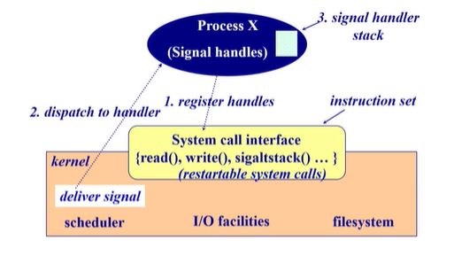

| 创建时间： | 2020/04/27 17:46 |
| 作者： | lzr |
信号、管道、消息队列和共享内存
队列容量问题
- 0容量 —— 发送方必须等待接收方（阻塞）
- 有限容量 —— 如果队列满，那发送方必须等待接收方（更接近实际情况）
- 无线容量 —— 发送方不需要等待
信号
- signal（信号）
- 软件中断通知事件处理
- Example：SIGFPE,SIGKILL,SIGUSRI,SIGSTOP,SIGCONT
- 接收到信号时干什么
- Catch：制定信号处理函数被调用
- Ignore：依靠操作系统的默认操作
- Example：Abort,memory dump,suspend or resume process
- Mask：闭塞信号因此不会传送
- 特点
实现方法：
写一个handler，发给操作系统用作系统调用
运行的时候收到信号的时候，响应信号前，提前做好准备，把程序的堆栈进行修改，把接下来运行的程序改成信号处理函数的入口，再把原来的入口放在信号处理函数后面。

管道
管道用来数据交换
消息队列
- 消息队列按FIFO来管理消息
- message：作为一个字节序列存储
- Message Queue：消息数组
- FIFO￥FILO configuration
共享内存
- 进程
- 每个进程都有字节的私有地址空间
- 在每个地址空间内，明确的设置了共享内存段
- 优点
- 不足
实现和特点：
- 把同一块物理内存映射到不同的进程的地址空间里
- 一个进程写另外一个进程立即可见
- 没有系统调用干预
- 没有数据复制
- 不提供公布